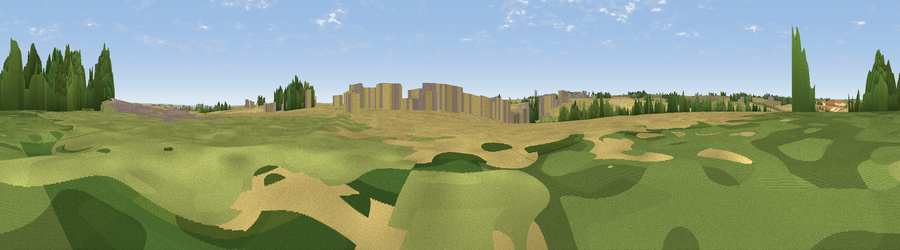

Viewpoint near Fridaythorpe
#39492 in England · top 84% of its area beats it · near FridaythorpeWhere it is
The exact computed spot (SE 85175 57825). Click the marker for map links.
The view, rendered

A 360° render of this exact spot computed from the terrain model, tree cover and land cover — summer colours, afternoon light, calibrated against photographs of famous viewpoints. Real trees, hedges and buildings will differ in detail.
The panorama
Grey silhouette: terrain skyline in each direction (720 bearings, Earth curvature and refraction included). Dashed green: skyline with trees (+15 m) and buildings (+8 m) as obstacles. Blue strip: how far the ground is visible on each bearing.
Where the view opens
Wedge length = distance to the farthest visible ground on that bearing (vegetation-aware). Rings at 10, 25 and 50 km.
What fills the view
84% cropland · 8% grassland · 5% woodland · 3% built-up
Angular shares of the visible panorama (visual magnitude), not map area. Landscape diversity 0.26 (0–1 Shannon).
Key numbers
More beautiful places nearby
The staircase of upgrades: each row has a higher view potential than everything closer. Driving times are estimates from straight-line distance, calibrated against real road routing — check an actual route before setting out.
| Place | Direction | Drive | Score |
|---|---|---|---|
| Viewpoint near Huggate | SSE · 3 km | ~6 min | 51.0 |
| Viewpoint near Kirby Underdale | WSW · 4 km | ~9 min | 66.0 |
| Garrowby Hill (A166 crest) | WSW · 5 km | ~11 min | 71.9 |
| Viewpoint near Acklam | WNW · 6 km | ~13 min | 73.8 |
| Viewpoint near Ampleforth | NW · 33 km | ~51 min | 76.6 |
| Beacon Hill | ENE · 34 km | ~52 min | 79.1 |
| Viewpoint near Speeton | ENE · 34 km | ~52 min | 80.0 |
| Olivers Mount | NE · 35 km | ~53 min | 80.3 |
54.00943, -0.70180 · source: screening · position refined by local search. Computed location — check access rights before visiting.